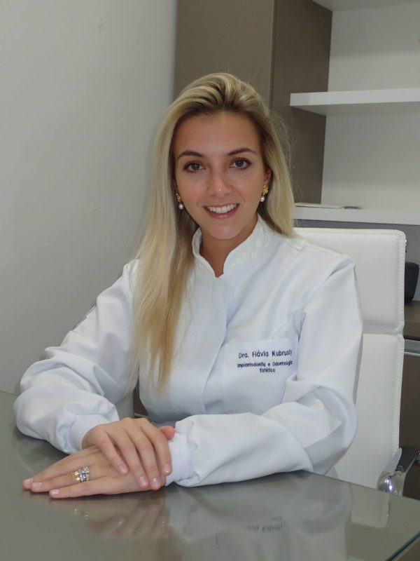
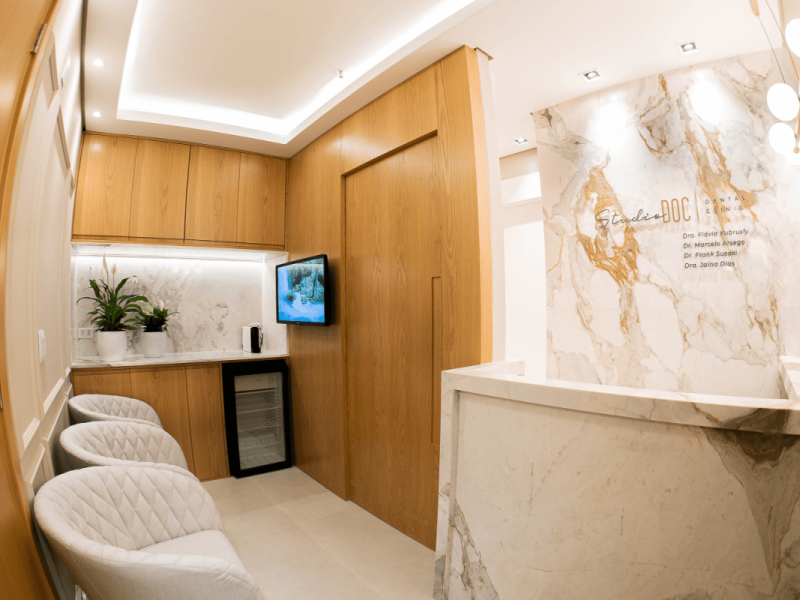
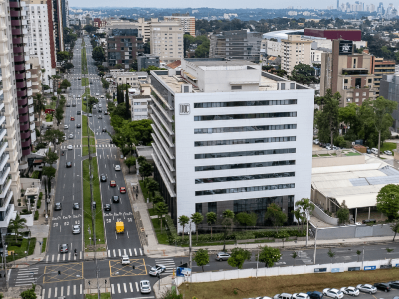
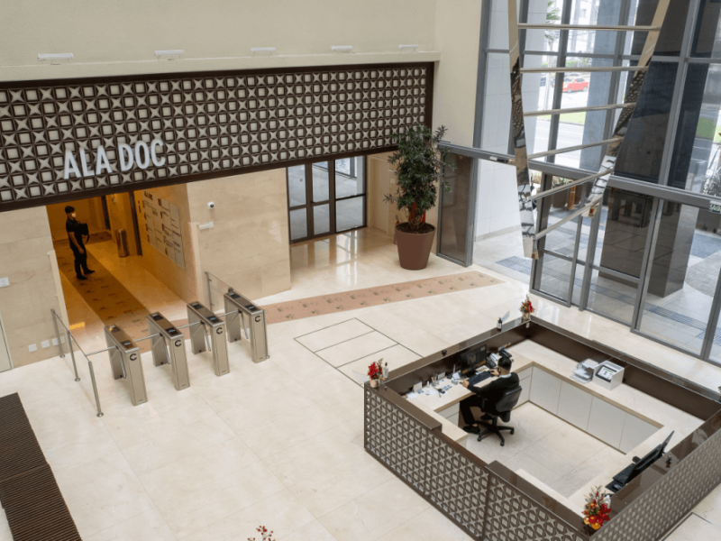
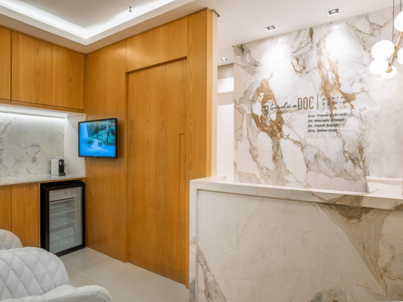
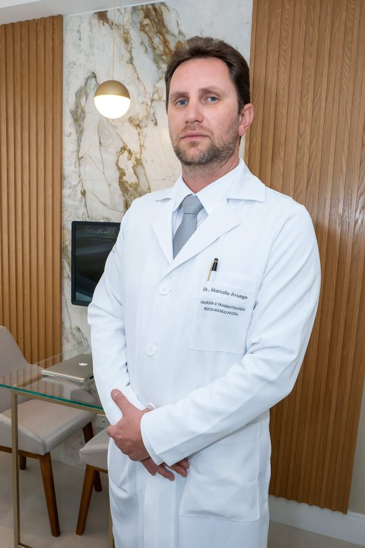
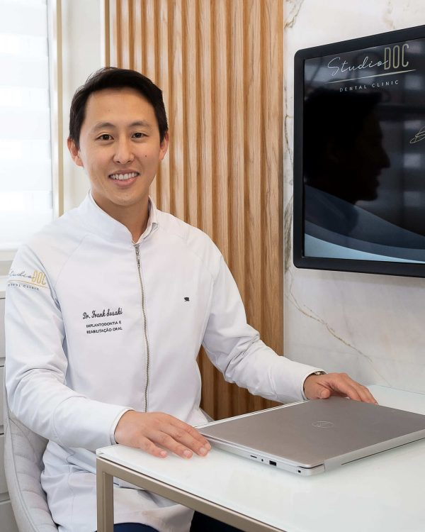
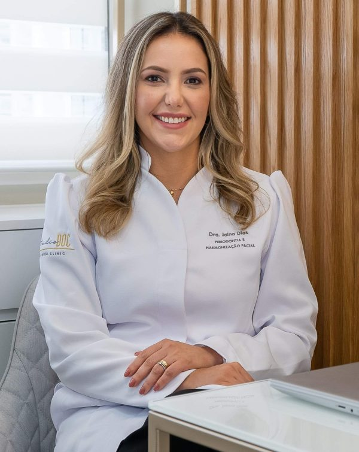

Studio DOC Dental Clinic · DOC Castelo Batel, Curitiba
Beyond Smiles…
Odontologia estética e funcional com atendimento personalizado, estrutura moderna e um corpo clínico de trajetórias complementares no coração do Batel.

04 profissionaisCorpo clínico com CRO/PR publicado
07 especialidadesCuidado estético, funcional e cirúrgico
DOC Castelo BatelAv. Visconde de Guarapuava, 4628
Seg. a sex.Atendimento das 08:30 às 18:30
Sobre nós
Referência em odontologia de qualidade
Localizado no Batel, o Studio DOC Dental Clinic integra o DOC Castelo Batel, empreendimento voltado à área da saúde em Curitiba.
A clínica oferece atendimento personalizado, estrutura moderna com equipamentos de alta tecnologia e uma experiência cuidada para cada paciente, do primeiro contato ao acompanhamento pós-tratamento.
Conhecer o corpo clínico


Especialidades
Tratamentos conduzidos por especialistas dedicados
Sete frentes clínicas apresentadas com seus principais procedimentos e áreas de cuidado.
Odontologia estética
DentísticaEspecialidade que agrega beleza e saúde para cuidar do sorriso, com os procedimentos mais modernos para trazer harmonia e saúde aos dentes.
- Lentes de contato
- Facetas
- Clareamento
- Restaurações
- Reabilitação oral
- Profilaxia
Implantodontia
Reabilitação dentáriaProcedimentos cirúrgicos e clínicos que devolvem função mastigatória e estética a pacientes com ausência dentária, com reabilitação unitária, parcial ou total.
- Exodontias
- Cirurgias de instalação de implantes dentários
- Cirurgias de enxerto ósseo
- Prótese sobre implante
Cirurgia e traumatologia buco-maxilo-facial
Ambiente hospitalar e ambulatorialTrata doenças da cavidade oral e seus anexos — traumatismos e deformidades faciais congênitas ou adquiridas — de cirurgias ortognáticas em ambiente hospitalar a procedimentos menos complexos em consultório.
- Buco-maxilo-facial
Harmonização facial
Proporção e beleza naturalConjunto de procedimentos simples, feitos em consultório, que visam rejuvenescer e corrigir detalhes da aparência do rosto, melhorando a proporção facial.
- Botox
- Preenchimento com ácido hialurônico
- Lipólise de papada
- Bioestimuladores de colágeno
- Bichectomia
Periodontia
Tecidos de sustentaçãoCuidado dos tecidos de sustentação da boca e dos dentes, com procedimentos que devolvem e mantêm a saúde bucal em dia.
- Tratamento periodontal
- Gengivoplastia
- Programa de prevenção
Ortodontia
Alinhamento discretoInvisalign é um alinhador dentário alternativo aos aparelhos ortodônticos tradicionais, que permite alinhar os dentes de maneira muito mais discreta.
- Invisalign
Endodontia
Estrutura interna do denteTrata as causas mais comuns que afetam a estrutura interna dos dentes, como cáries profundas ou fraturas.
- Doenças e lesões dentárias
Primeiro contato
Não sabe qual especialidade procurar?
Conte brevemente o que você precisa. A equipe recebe sua mensagem pelo canal oficial e orienta o agendamento com o profissional adequado.
Pedir orientação no WhatsApp
Corpo clínico
Um corpo clínico de trajetórias complementares
Conheça os quatro profissionais, suas áreas de atuação e os números de inscrição no CRO/PR publicados pela clínica.

Dr. Marcelo Arsego
CRO/PR 19.043 Cirurgia e Traumatologia Buco-Maxilo-Facial — UFPR · Northwestern Memorial Hospital
Dr. Frank Susaki Filho
CRO/PR 20.710 Implantodontia e Reabilitação Estética — UFPR · University of Florida
Dra. Jaína Dias de Oliveira
CRO/PR 20.703 Periodontia e Harmonização Facial — Universidade Positivo · University of Florida
Por dentro da clínica
Um ambiente que traduz cuidado em cada detalhe
Estrutura contemporânea dentro do DOC Castelo Batel, apresentada com imagens oficiais do Studio DOC.
Um sorriso saudável reflete os melhores momentos da vida
Cuidar do seu sorriso está em nossos planos — com missão, visão e valores que orientam cada atendimento no Studio DOC Dental Clinic.
Missão
Transformar vidas através do sorriso, aplicando conhecimentos, talento e tecnologia para proporcionar uma saúde bucal plena aos nossos pacientes.
Visão
Ser referência em tratamentos de Odontologia Estética e Funcional, através de um atendimento exclusivo conforme a necessidade de cada paciente.
Valores
Atendimento humanizado, integridade, transparência, preço justo, exclusividade, segurança, confiança e profissionais altamente qualificados.
Fale conosco e agende uma consulta
Indique o assunto e, se quiser, um profissional de preferência. A equipe confirma o direcionamento e a disponibilidade pelo canal oficial.
-
Endereço
DOC Castelo Batel — Av. Visconde de Guarapuava, 4628, sala 810, Ala DOC, Batel, Curitiba/PR -
Horário
Segunda a sexta, 08:30 às 18:30 -
Telefone
(41) 4101-8888 -
E-mail
contato@studiodoc.com.br
Horário de atendimento
Segunda a sexta08:30 – 18:30
SábadoFechado
DomingoFechado